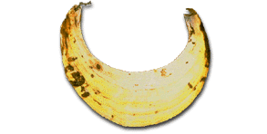
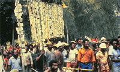

Shell money of Papua New Guinea
Shell money of Papua New Guinea

Shell money of Papua New Guinea

The kina shell was a traditional type of money in Papua New Guinea
Find out more about the use of shell money below
In the 1950s and 1960s pearl-shells, known as kina, were used as personal ornaments and in bridewealth payments in the New Guinea Highlands. At marriage ceremonies they were displayed on large banners.
When Papua New Guinea became fully independent in 1975 it replaced the Australian dollar with a new currency unit named after the kina shell. The shell was depicted on the 5-kina note issued from 1975.
The traditional forms of payment encountered by European travellers in the Pacific were not precisely the same as the forms of money the Europeans brought with them. The local peoples did not use their own currencies for everyday payments, nor did they recognise the value of coins and paper money.
Ethnographers and anthropologists have examined the payment systems of the Pacific islanders and documented the ways in which they differ from European payment systems.
In the 1980s Papua New Guinea paper money began to be used in bridewealth payments in the New Guinea Highlands. The notes were displayed on the bridewealth banners which had previously carried kina and feathers being used to make bridewealth payments.
The New Guinea Highlanders had absorbed the European-style paper money into their traditional payment system.
ABOVE: Kina pearl shell from Papua New Guinea, around 1950: CM
Today the shell is shown on the national banknotes
Kina pearl-shells
A Western view of payment

Using the paper money
5 kina note of the Bank of Papua New Guinea, 1981: CM 1993-1-29-2, 144-72mm;
Picture of a bridewealth ceremony in the 1980s, Papua New Guinea; copyright of Michael O'Hanlon.